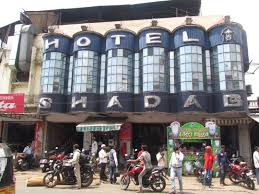
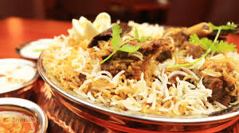

Shadab
Shadab is one of the most famous restaurants in the Old City near Charminar. It is especially known for its flavorful mutton biryani and traditional Mughlai dishes. The restaurant has a classic atmosphere and is always crowded with food lovers.

